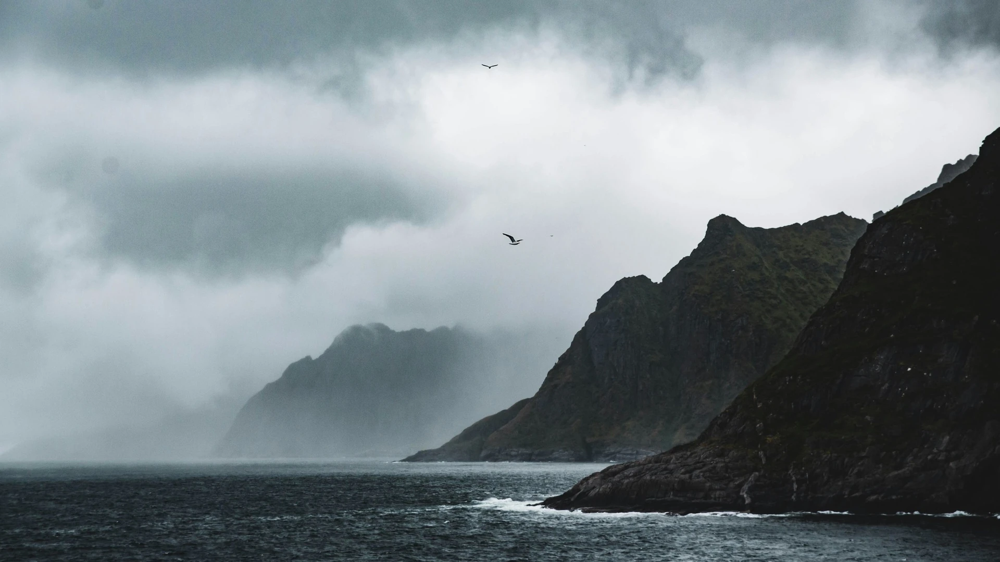
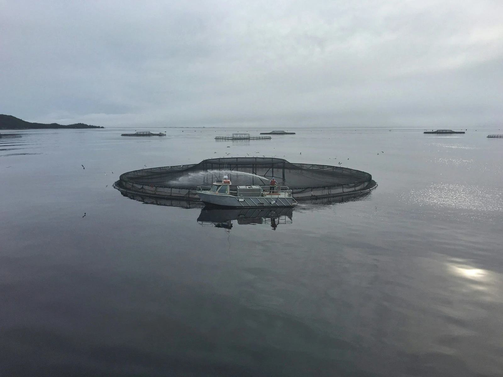
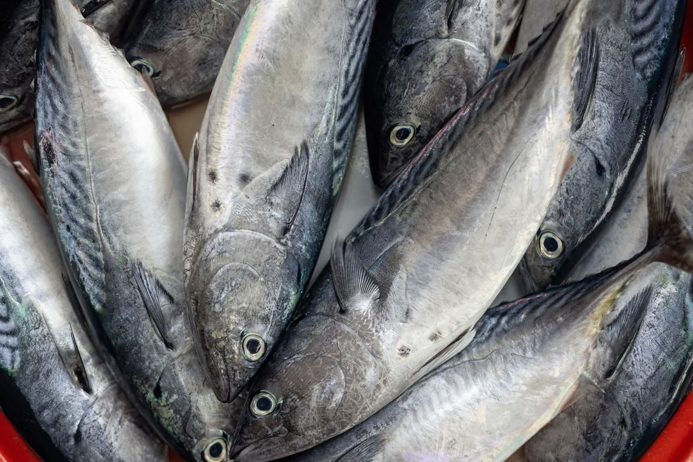
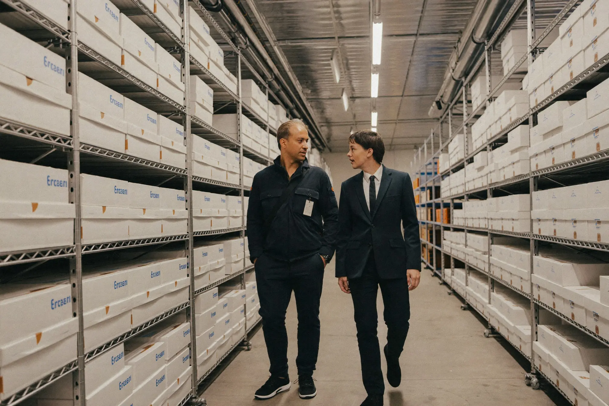

The taste of Norway.
The future of seafood in India.
Connecting premium Norwegian seafood with the next generation of Indian consumers, distributors and food businesses.



Shaped by the North Atlantic
Everything begins in Norway.
Along one of the world's longest coastlines, cold waters and strong ocean currents create ideal conditions for premium seafood. This is not simply where our products come from. It is where our values come from.
- Quality.
- Consistency.
- Respect for the ocean.
Cold waters and strong ocean currents.



01 / 03
One company. Two value chains.

NorSeafood
Frozen whole Norwegian salmon supplied to importers, processors and distributors seeking reliable long-term supply.
Current focus: frozen whole Atlantic salmon
Explore NorSeafood
Kelda
Inspired by Norway. Created for India. Consumer-ready seafood products for the Indian market, built on Norwegian origin and designed for modern Indian consumers and food experiences.
Explore KeldaWhy India. Why now.
India is entering a new chapter in food consumption.
A growing middle class. Rising disposable income. Greater demand for premium international food experiences.



Our commitment
Every decision we make is guided by a commitment to responsible sourcing, uncompromising quality standards, and long-term partnerships that create lasting value.
-
Quality
Without compromise.
-
Traceability
Without shortcuts.
-
Partnerships
Without end dates.
-
Growth
Without sacrificing responsibility.

Built between two countries
Great seafood begins long before it reaches a plate. It begins with cold waters, responsible stewardship and generations of maritime expertise. But above all, it begins with people.
Norwegian Sustainable Seafood was founded to build a dedicated bridge between Norway and India. Through NorSeafood, we connect Norwegian producers with Indian importers, processors and distributors. Through Kelda, we bring premium Norwegian seafood closer to Indian consumers. We believe lasting value is built through trust, transparency and long-term partnerships.
The strongest businesses are built when people, cultures and opportunities come together around a shared vision.
Henning B. FigenschouFounder & CEO
Henning and his partners, Amit and Prakash, are based between Norway and India, working directly with first-wave import and HoReCa partners to understand what the Indian market needs from a Norwegian seafood supplier.
Let's start a conversation
Looking for a long-term seafood partner?
Whether you are interested in Kelda products, seafood sourcing or distribution partnerships, we would like to hear from you.